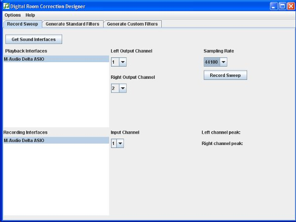
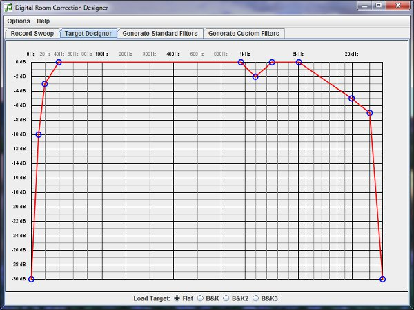
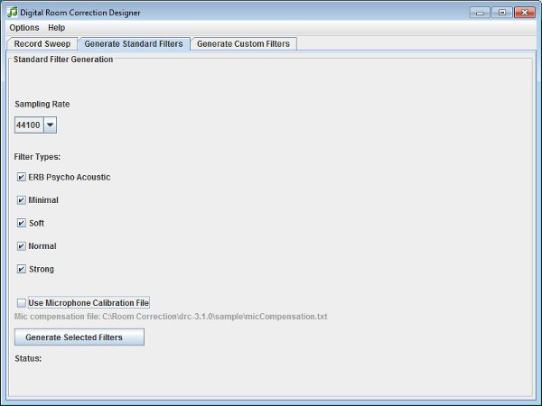
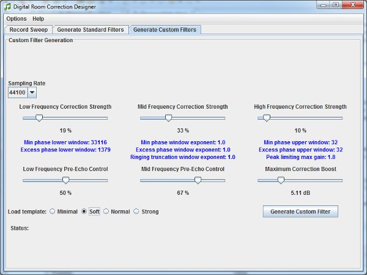
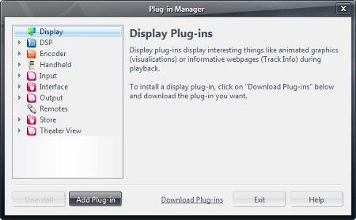
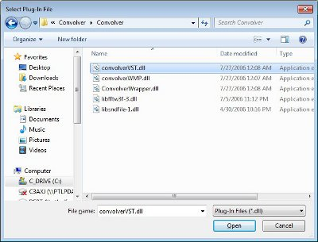
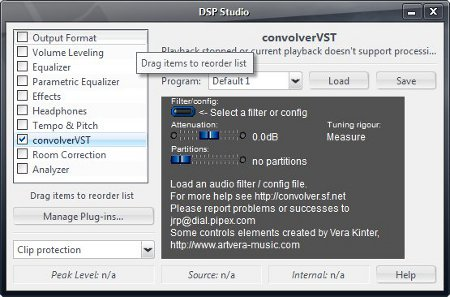
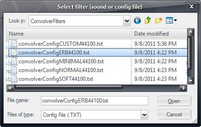
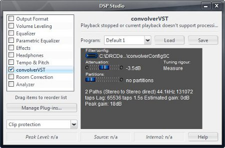
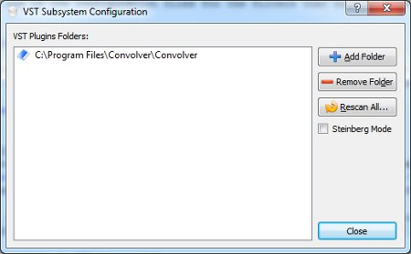

Digital Room Correction Designer was created to ease the process of
creating and loading room correction filters for use with two channel
stereo systems. DRC Designer includes Denis Sbragion's DRC for creating
room correction filters, John Pavel's Convolver VST for playing music
through the filters, and Simple Automated IR Measuring Tool by Denis
Sbragion and Edward Wildgoose for creating the impulse response files
needed by DRC.
I wrote Digital Room Correction Designer because it is difficult to create room
correction filters via DRC without a large amount of background
research. Room Correction Filters have made a very positive impact in
my system, so hopefully this application will allow others to try room
correction in an easier manner. The latest version can be found
here.
Digital Room Correction Designer does the following:
- Aids the user in recording impulse responses for each channel to be used in
creating digital room correction filters.
- Allows the user to easily generate all of the standard room correction filters
that ship with DRC for each sampling rate that they recorded an impulse response for.
- Allows the user to easily customize and generate their own room correction filters based on the standard filters
as a starting point.
- Automatically generates the needed configuration files to load the filters into Convolver VST so that music can be
played through the room correction filters.
Creating room correction filters using DRC Designer requires the
following:
- A PC with a Microsoft Windows XP or newer operating system.
The program has been tested on Microsoft Windows XP 32 bit, and
Microsoft Windows 7 64 bit.
- Java Runtime Environment, which can be found here.
- A full duplex sound card or computer audio interface that
supports both play back and recording, preferably with ASIO driver
support. While the application should work with a sound card that
doesn't support ASIO, many such sound cards use poor sample rate
converters that can cause very poor quality measurement artifacts.
- A reasonably flat RTA measurement microphone. Inexpensive but
reasonably good microphones are the Behringer ECM8000 or the Dayton
EMM-6. An excellent quality but more expensive microphone is the
Earthworks M30.
- A microphone preamplifier to boost the level of the RTA
microphone signal, unless one is already built into your soundcard or
audio interface.
- ASIO: Select ASIO if your sound card or audio interface
has ASIO driver support. This is the preferred manner of running DRC
Designer.
- Direct Sound: Select Direct Sound if your sound card or
audio interface does not support ASIO drivers.
- Set DRC Application Directory: This option should automatically
be set to the correct folder, but if for some reason you move the DRCDesigner
folder to a new location after you first run the program, you will need to
set this option to the new location of the DRCDesigner folder. The
folder to select will have at least some of the following folders within it:
Convolver Filters, Directions, drc-3.2.0, Rec_imp.win32, and
convolver4-4vc++.zip.

The Record Sweep tab allows you to record the impulse responses required to
generate room correction filters.
The basic instructions are as follows:
- Make sure that your sound card is set to play through your speakers and your
microphone and microphone preamplifier are set up properly. The standard manner is for
output channel 1 to play through the left speaker, output channel 2 to play through the
right channel. The input circuit should be microphone to microphone preamplifier to
input channel 1. Make sure that your amplifier volume is not set too loud when first
trying to record the impulse responses. Excessive volume can damage your speakers and ears.
- Under the Options menu, select ASIO or Direct Sound according to your
sound card capabilities.
- Press the Get Sound Interfaces button to get a list of the audio interfaces on your computer.
- Select a Playback Interface and a Recording Interface. The play back interface and recording
interface need to be the same device if you have more than one ASIO capable sound card in your computer. While
it may not be necessary to do so with Direct Sound interfaces, the results probably will not be very
good if you choose a different device for input (recording) and output (play back).
- Selecting a Playback Interface will populate the Left and Right Output channel drop down boxes.
The default is channel 1 for left output, and channel 2 for right output, but you can change these
if you have more than two output channels available to suit your needs.
- Selecting a Recording Interface will populate the Input Channel drop down box with the number
of input channels that the device supports. The default input channel is number 1, but this can
also be changed to suit your needs.
- Choose a sample rate. Selecting a playback interface will populate the Sampling Rate drop down box with sample rates that
the device supports. When both a playback interface and a recording interface
are selected, the Sampling Rate drop down box is limited to sampling rates that
are commonly supported by both interfaces. If most of your music is compact disc based, you should
record impulses at the 44100 sampling rate. If you have music files at other sample rates,
you can later record additional impulse responses at higher sampling rates. Digital Room
Correction Designer only supports the following sample rates: 44100, 48000, 88200, and 96000.
- Make sure your stereo system volume is set to a reasonable level and press the Record Sweep button.
A sixty second sweep will be played through each speaker individually and recorded. The application will not
appear responsive while this is taking place. When both channels are done, the left and right
channel peaks of the recording will be displayed. Ideally, the peaks should be somewhere between
-25 dB and -5 dB in level, and within a dB or so within each other for each channel. If the
recorded peak level is good, the results will be colored green. If the peak level is a little too low or
a little to high, the results will be colored orange. If the peak level is far to low or has clipped from
too high a level, the results will be colored red.
- Once good impulse recordings have been created, you can continue to the Generate
Standard Filters tab.

The Target Designer tab allows you to draw a target frequency response that will be applied when the room correction filters
are created in both the Standard Filters tab and the Customized Filters tab. The default target frequency response is flat,
but here you can draw a more euphonic target to suit your tastes. Please note that any changes you make to the target curve here will
effect all filters created afterwards. Please also note the following words written by Denis Sbragion, DRC's author:
DRC hasn't been designed to provide a "desired frequency response" but to provide the most accurate reproduction of what's
on the recording. This means that there's only one correct target: flat. This need to be corrected taking psychoacoustics
into account, but the target is still flat, even though it becomes "perceived as flat".
The Load Target radio buttons will load the target response of the standard targets shipped with DRC. The red line
is the target response, and the blue circles are the frequency and amplitude reference points as they exist in the standard
files.
The X axis of the graph describes frequency, and the Y axis describes amplitude. The target response graph is clickable
with the mouse. Clicking anywhere on the graph will add a blue point, and the target will be
redrawn. Clicking on an existing blue point will delete the point (as long as you are close enough to the center of the point),
and the target will be redrawn.
Please note that you cannot add new points nor delete the two points outside of the 20 kHz frequency range; you can only change
the amplitude of the existing points so that you may define roll-off as you wish. The actual frequency value of these two points
will change "behind the scenes" in a fitting manner for the sample rate of the filter you are creating.
Please also note that, due to DRC target file rules, the leftmost point on your target response graph will always equate to 0 Hz
"behind the scenes". So leave the left-most point near the 0 Hz mark, no matter what amplitude you set it to, otherwise you will
not get the target response you desire. Clicks that land outside of the frequency and amplitude graph boundaries will be ignored.
Currently there is no manner to save and load custom targets, but your last defined target is saved between sessions and loaded when you
restart the application.

The Standard Filters tab simply allows you to generate most of the standard room correction filters
that come predefined in DRC. This allows you to listen to each of the filters individually to decide how much
room correction appropriate for your system. The ERB or soft filters should be of sufficient strength
to offer good improvements to a decent audio system in a well set up room.
You can generate room correction filters for sample rates 44100,
48000, 88200 and 96000 as long as you have recorded impulse responses for those sample rates on the
Record Sweep tab. If you choose a sample rate for which you have not recorded impulse responses, the
Generate Filters button will be disabled.
Choose the sample rate for which you would like to generate room correction filters, and select the filter
types you would like to generate. If you select a sampling rate for which you have not recorded impulse response files,
the rest of the tab will be disabled. Pressing the Generate Selected Filters button will create the filters
as well as the Convolver VST configuration files required to load the filters. The process to generate the filters may take a while,
depending on the number of filter types you have selected, the sampling rate (higher sample rates take longer to generate),
and the speed of your computer. While the program is generating the filters, the Generate Filters button will be disabled so that it
cannot be pressed again until the process is done. The Status label will show where the program is in the filter generation
process.
The filter generation process will place the Convolver VST configuration
files, as well as the resulting room correction filters for each channel
in the ConvolverFilters directory. The filter configuration files are text files named by the filter type and sample rate.
For example, the Convolver VST configuration file for the soft filter for 44100 sample rate will be named convolverConfigSoft44100.txt,
and it will found in the \DRCDesigner\ConvolverFilters folder. For more information on using Convolver VST, see
Using and loading filters with Convolver VST.
If you have had your microphone calibrated and have a calibration text file, check the Use Microphone Calibration File
check box and browse to and select your microphone calibration file. When DRC generates filters, it will compensate with the
calibration file. Please note that selecting microphone calibration here will also have effect when generating custom filters
on the custom filters tab.

The Generate Custom Filters tab allows you to customize the important parameters of DRC so that you can
create a room correction filter specifically suited to your stereo system. You should first generate the
standard filters, listen to them individually, and decide which sounds best to you before moving to the
Custom Filters tab. The important parameters that make up the standard filters can be loaded and then
changed via the various sliders to suit your tastes. The various blue informational labels show the actual
configuration parameters that will be sent to the DRC program, but I've tried to keep the application simple by
labeling the slider controls with less technical names and percentages. The blue informational labels are for those
who have a wish to dig deeper into DRC configuration.
The first parameters to modify are the Mid Frequency Correction Strength and Mid Frequency Pre-Echo Control sliders,
as these define the correction strength in the critical mid and mid-bass range. These are really sensitive parameters,
so changing them a small amount can easily cause an audible difference, especially when you are close to the boundary
where correction artifacts start to appear. When you are at a comfortable place with no artifacts,
you can start increasing the Low Frequency Correction Strength slider and decreasing the Low Frequency Pre-Echo
Control sliders, by about a 5% at a time, until artifacts start to appear again, then back off.
When custom filters are created, the Convolver VST configuration files are placed in the DRCDesigner\Convolver\Filters folder,
and given a name based on the sample rate and an increasing number starting with 1 so that you can save and try multiple custom
filters.
Use the Sampling Rate drop down box to choose a sampling rate for your custom filter. Digital Room Correction
Designer only supports 44100, 48000, 88200 and 96000 sample rates. If you choose a sample rate for which you have
not recorded impulse responses, the rest of the tab will be disabled.
After listening to the standard filters and deciding which is best for your system, you can load values
similar to the standard filter configurations by selecting the minimal, soft, normal or strong radio buttons. Use these values
as a starting point for your customized filter.
You can increase or decrease the strength of correction in the bass region with the Low Frequency Correction Control slider.
Higher percentage values increase low frequency correction.
You can increase or decrease the strength of the excess phase correction in the bass region with the Low Frequency Pre-Echo Control slider.
This control is effective for reducing pre-echo artifacts in the bass region. Higher percentage values will decrease excess phase correction strength.
You can increase or decrease the strength of correction in the critical mid-bass and midrange regions with this slider Changing this slider a small amount
can have a large effect, particularly if you are near the boundary where correction artifacts start to appear. Higher percentage values increase mid-bass and midrange frequency correction.
You can increase or decrease the strength of the excess phase correction in the mid-bass and midrange region with this slider.
Changing this slider a small amount can have a large effect, particularly if you are near the boundary where correction artifacts
start to appear. This control is effective for reducing pre-echo artifacts in the mid-bass and midrange regions. Higher percentage values will decrease excess phase correction strength.
You can increase or decrease the strength of correction in the treble region with the High Frequency Correction Control slider.
Higher percentage values increase high frequency correction, at the cost of greater sensitivity to listening position.
You can increase or decrease the amount of gain allowable with the Maximum Correction Boost slider. Standard values are around 5 to 8 dB of gain.
Over-doing with the maximum correction boost slider can make your amp and speakers work beyond their comfort zone.
DRC Designer includes Convolver VST which is a plugin that can be loaded into J River Media Center,
Foobar 2000, CPlay, and possibly other media players to allow you to listen to music through your
digital room correction filters.
To get started, extract the convolver4-4vc++.zip file found in the
DRCDesigner folder, and run the Setup.exe file found in the Release PIII folder.
Once you have run the Setup.exe program, you will need to modify your PATH environmental variable to
include the folder that Convolver VST was installed to. By default this folder is C:\Program Files\Convolver\Convolver\.
To modify the PATH environmental variable, open Windows Control Panel from the Start menu, and choose System.
Choose Advanced in the resulting applet, then choose the Environmental Variables button. Under System Variables,
scroll down until you find Path, select it with the mouse and press the Edit button. Add
;C:\Program Files\Convolver\Convolver\ to the end of the line in the resulting pop-up, then press the OK buttons
until there are no more OK buttons to press.
From the JRiver Media Center Tools menu, choose the Plug-in Manager... item, and press the Add Plug-in
button and choose the Browse for Plug-in... item.

Navigate to the C:\Program Files\Convolver\Convolver folder, and choose convolverVST.dll. Press OK on the convolverVST warning
that says "No filter or config file selected".

From the JRiver Tools menu, select Options. Select the Audio item on the left,
and select DSP & output format... under Settings in the right section of the window.
A window called DSP Studio will open. Check ConvolverVST on the left side of the window
that opens up, then press the button next to <- Select a filter or config.

In the dialog box that pops up, navigate to C:\DRCDesigner\ConvolverFilters, and choose one of
the WAV files that Digital Room Correction Designer generated.

Once the filter is selected, hold the Shift down and select the Attenuation slider with the mouse and
back it off to about -3.5 dB so that clipping is less likely. You can adjust the level later as needed. Holding down
the shift key while moving the mouse allows you to move the slider in small increments. Make sure you are not playing
music while adjusting the slider. Close the various DSP Studio windows when done.

In order to load room correction filters in Foobar 2000, you will need to download the Foobar VST Wrapper from
http://www.yohng.com/software/foobarvst.html.
Extract the foobarvst.zip to any folder and copy foo_dsp_vstwrap.dll to the C:\Program Files\foobar2000\components folder.
When you start Foobar 2000, you will see a small blue VST icon in the Windows System Tray. Right click the blue VST icon and
choose the VST Setup... menu item. In the resulting VST Subsystem Configuration window, select the Add Folder
button and navigate to C:\Program Files\COnvolver\Convolver and press the OK button, then the Close button.

Right click the small blue VST icon in the Windows System Tray again and choose the Use VST Effect menu item then choose
convolverVST. In the ConvolverVST configuration window, press the button under Filter/Config, then navigate to
C:\DRCDesigner\ConvolverFilters, and choose one of the WAV files that Digital Room Correction Designer generated. Once the
filter is selected, hold the Shift down and select the Attenuation slider with the mouse and back it off to about -3.5 dB so that clipping
is less likely. You can adjust the level later as needed. Holding down the shift key while moving the mouse allows you to
move the slider in small increments. Make sure you are not playing music while adjusting the slider.
Open the cPlay Settings window by pressing the cPlay button in the lower left are of the main window.
Press the VST button in the Cplay Settings window. Press the VST Plugin button in the VST Settings window.
Navigate to the C:\Program Files\Convolver\Convolver folder and choose convolverVST.dll, then press the OK buttons.
Once you have chosen some music to play in CPlay, press the VST button on the main CPlay screen. In the small ConvolverVST window
that opens, press the button next to <- Select a filter or config, then navigate to C:\DRCDesigner\ConvolverFilters,
and choose one of the WAV files that Digital Room Correction Designer generated. Once the filter is selected, hold the Shift down and select the Attenuation slider
with the mouse and back it off to about -3.5 dB so that clipping is less likely. You can adjust the level later as needed.
Holding down the shift key while moving the mouse allows you to move the slider in small increments. Make sure you are not
playing music while adjusting the slider.